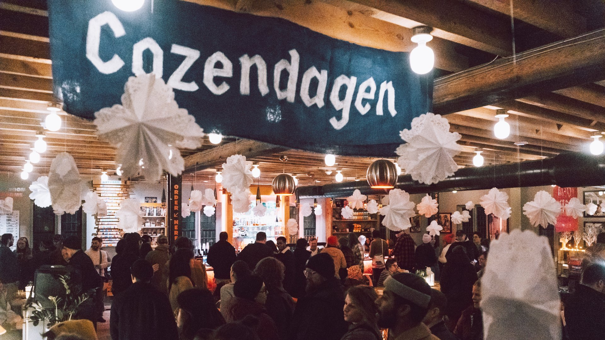
We deserve a winter that actually gets us through the winter.
Cozendagen is a nondenominational holiday season celebrating the simple joy of coziness — soup, candlelight, warm socks, and each other. It begins at the winter solstice and carries us all the way to the spring equinox. It's easy, it's chill, and it's for everyone.
10
Years in the making
100+
Guests, first public season
1
City so far — more on the way
Solstice–Equinox
The whole season, not one night
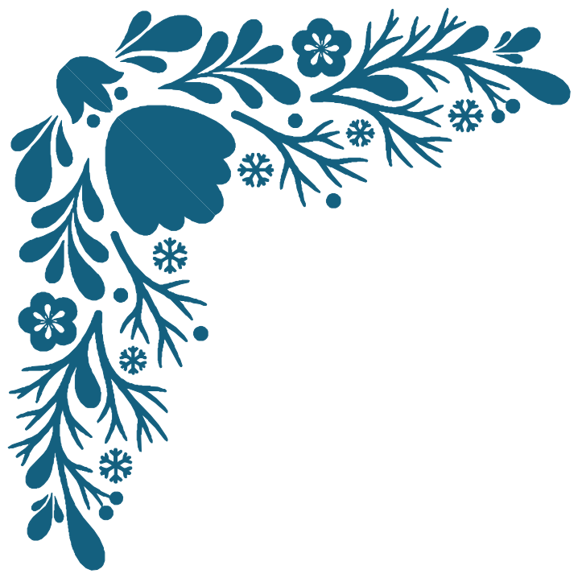
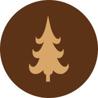
Winter as environment
Not a theme laid over the cold — a way of living inside it. Coziness you earn against the weather, not decoration you hang despite it.
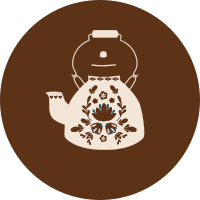
Simple, low-pressure ritual
Soup. Candlelight. A blanket and a good book, or a room full of friends. No gifts to buy, no calendar to keep — just deep-winter comfort, on purpose.
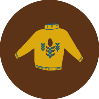
Warmth, shared
Every Cozendagen gathering carries forward a winter clothing drive, so the season's warmth reaches neighbors who need it most.
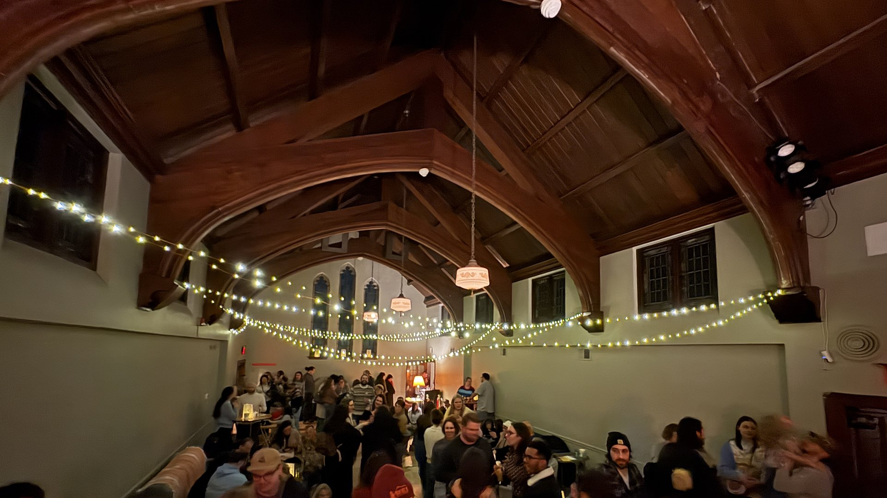
It started with one family shaking off the winter blues.
Ten years ago, Cozendagen began as one Lancaster family's answer to the January slump — the long, gray stretch after the holiday lights come down. This year, it became a public tradition: a sold-out night at West Art, Lancaster's Sanctuary transformed into the Cozendagen Ski Lodge, with hot soup, hot drinks, hot dessert, and a room full of neighbors in fuzzy sweaters.
West Art is the model for what a Cozendagen host venue looks like — a space that can own a piece of the night (food, drinks, or dessert) and already has the kind of community around it that shows up for something new.
Come see what all the fuss is about.
The Cozendagen Winter Festival at West Art
Hot soup, hot drinks, hot dessert, live music, and a clothing drive at the door. Free — RSVP so we book enough soup.
Cozendagen Picture House Night
An indie-theater winter film series, paired with a special menu of soups and hot drinks.
If you've ever reveled in any of the following, you've celebrated Cozendagen without knowing it. There's no rulebook — just timeless cold-weather comforts, enshrined on purpose so they don't just happen at random.
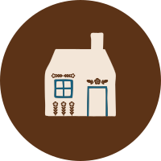
Home & Hearth
A fire, a fully lit house, a reason to stay in.
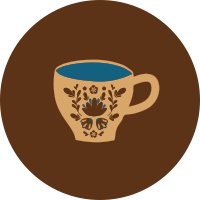
Hot Drinks & Soup
The centerpiece of every Cozendagen gathering, official or not.
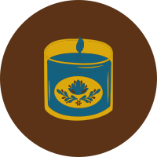
Candlelight & Comfy Crafts
Knitting, cozy mysteries, and low, warm light after dark.
What a Cozendagen night actually looks like.
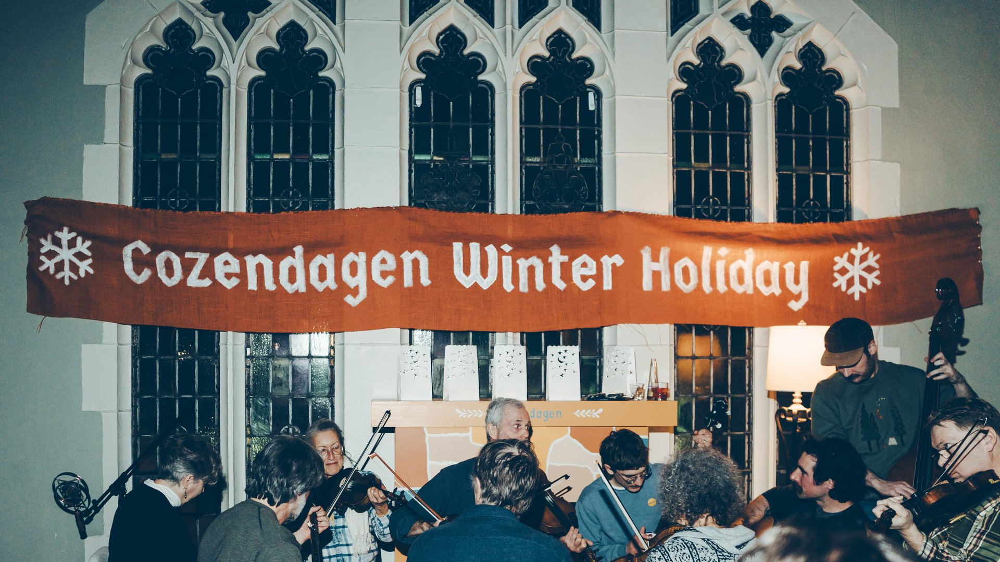
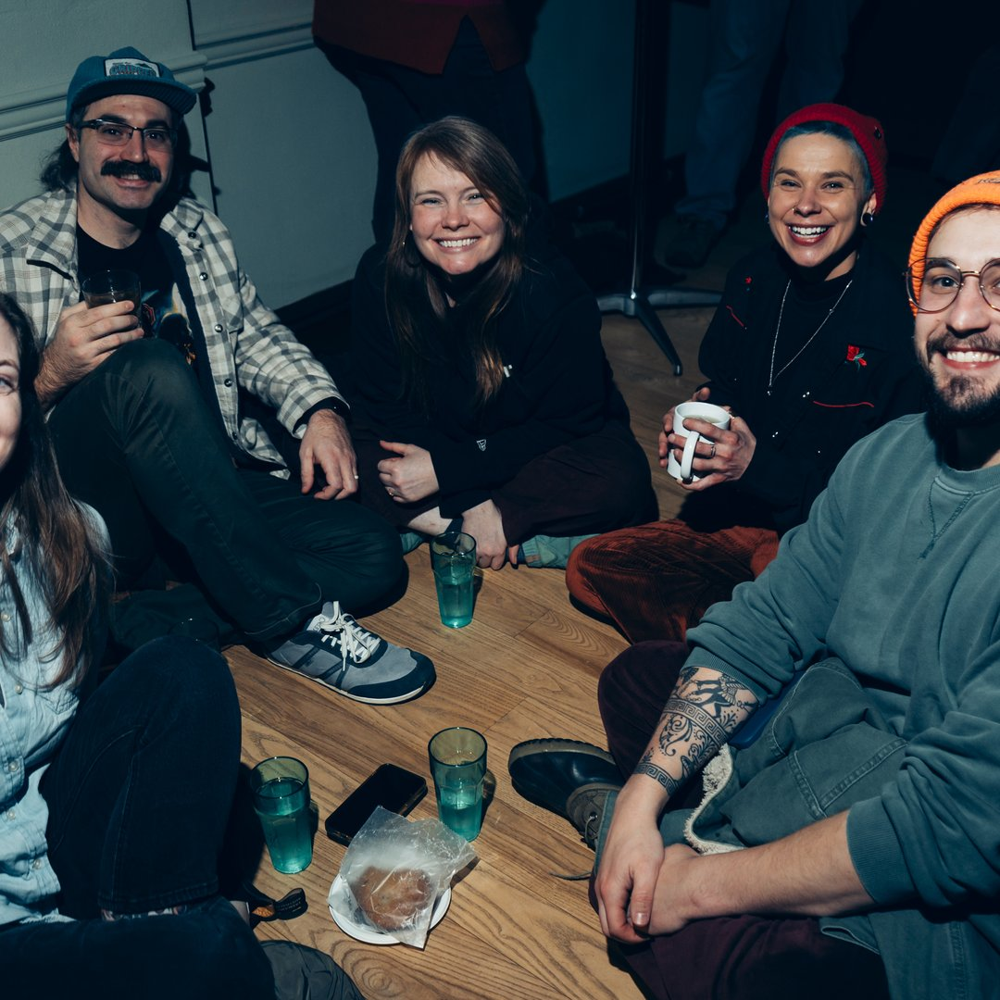
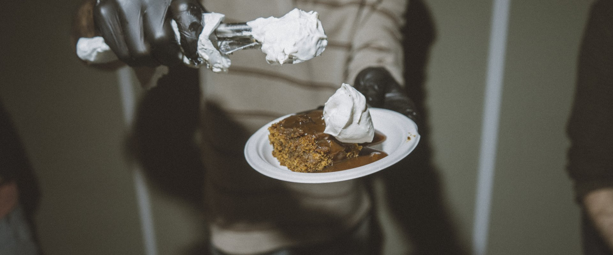
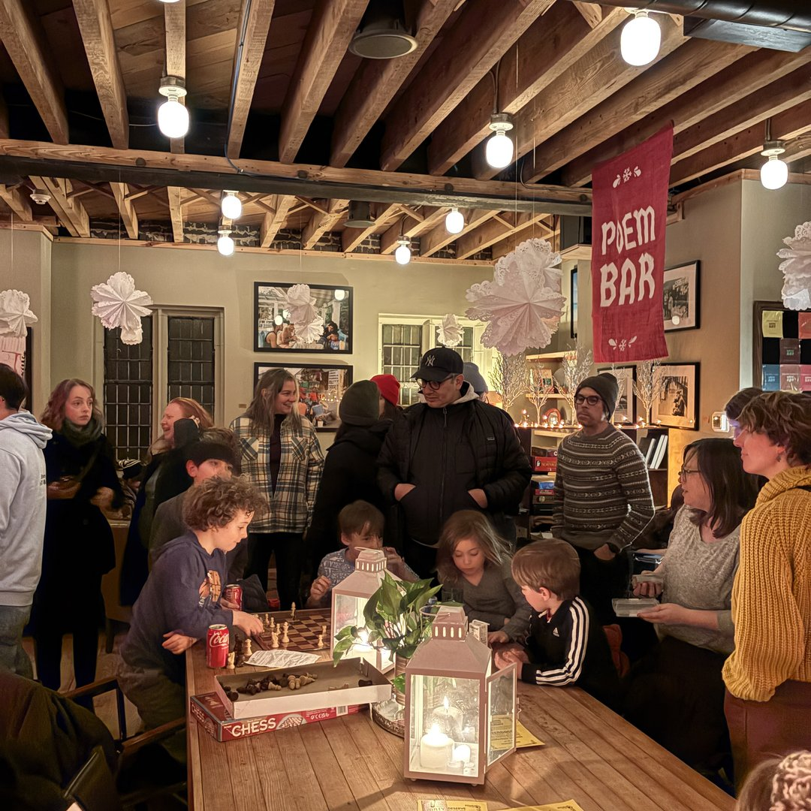
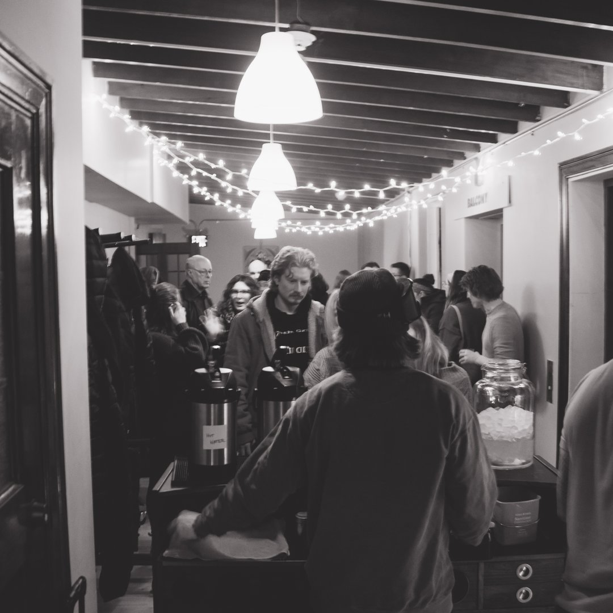
Found us on Reddit. Stayed for the soup.
Wow. How did I miss this?!
I'm bringing my knitting.
Deal me in.
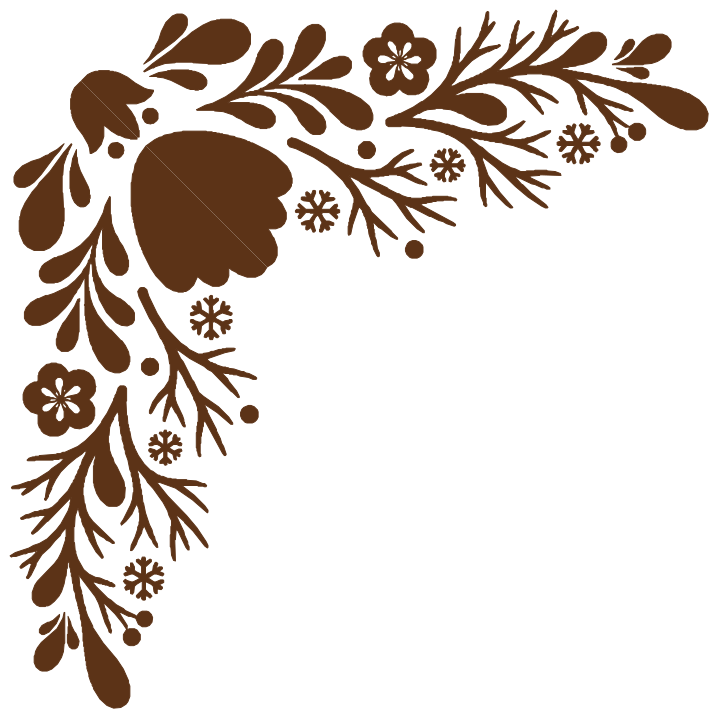
2026 was just a warm-up.
Cozendagen is growing city by city — starting with places that already have a West Art of their own: a venue with real local culture, a younger crowd, and the will to own a piece of the night.
Phoenixville & Bethlehem, PA
Philadelphia & Pittsburgh, PA
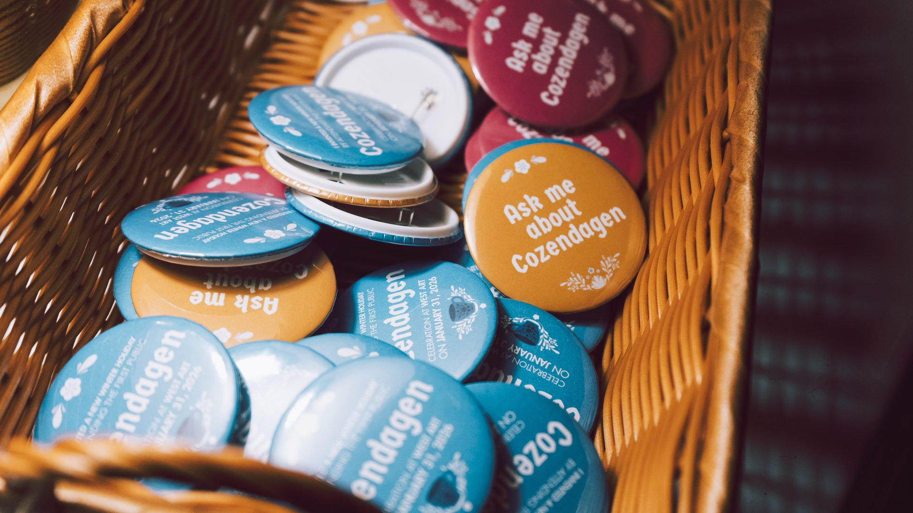
When we say "celebrate coziness," we mean coziness for all.
Every Cozendagen event doubles as a donation point for winter hats, gloves, and long warm socks — collected for local shelters. Coziness isn't a real tradition if it stops at the door.